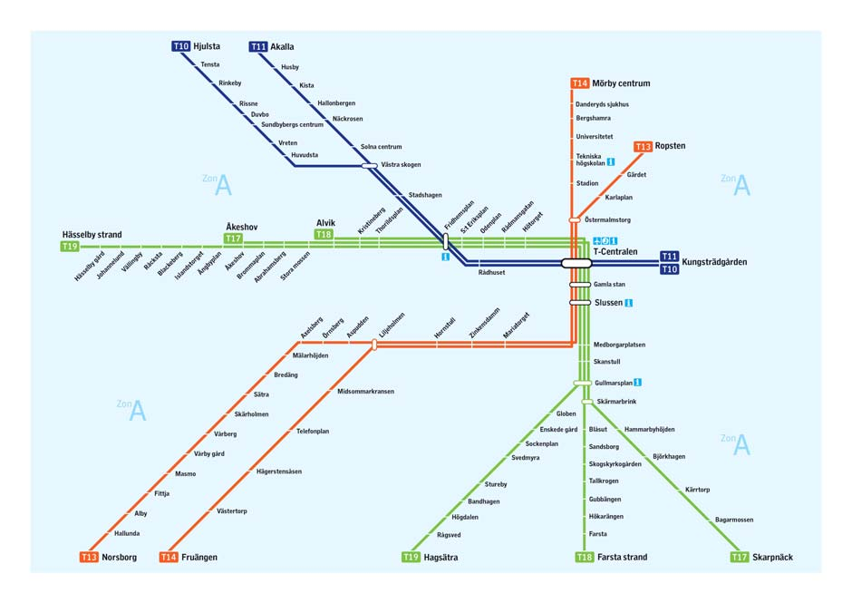

2009 ICPC World Finals · Problem J
Like most modern cities, Stockholm has a well-developed public transportation system. The heart of public transportation in Stockholm is the subway. A topological map of the subway system illustrates the different subway lines and how they are connected, as illustrated in Figure 8. For this problem you should assume that a subway map is always tree-shaped, even though this is not quite true for Stockholm because of the cycle formed by the green and blue lines.

A topological map says very little about the geometry of a subway system, such as the distances (and consequently travel times) between different subway stations. For instance, as most students in Stockholm know, the distance between “Tekniska Högskolan” (The Royal Institute of Technology) and “Universitetet” (Stockholm University) is quite large, even though there is no indication of this on the map.
You must write a program that can augment a topological map by writing down the time required to travel between every pair of adjacent subway stations. Fortunately, those travel times are known, so you do not have to measure the times yourself. But the actual travel times are given in seconds, while the times must be written on the map as estimates of integral numbers of minutes.
A natural way of estimating times might be to simply round all the travel times to the nearest minute. However, this can cause huge cumulative errors. For instance, in the Stockholm map, this estimation method could result in an error as large as 15 minutes in the total travel time between some pairs of stations. In order to counter this, your program may choose to round some travel times up and round other travel times down. The rounding must be done in such a way that the largest cumulative error between any pair of stations is minimized.
The input consists of several test cases. Each test case starts with an integer N (1 ≤ N ≤ 100), which is the number of subway stations. The N stations are identified using the integers from 1 to N. Each of the next N-1 lines contains three integers a, b and t (1 ≤ a, b ≤ N, and 1 ≤ t ≤ 300), indicating that stations a and b are adjacent and that it takes t seconds to travel between them. For simplicity, ignore the time a train spends standing still at a station.
The last test case is followed by the integer zero on a line by itself.
For each test case, print the case number (starting with 1) then the largest rounding error in seconds of travel time between any pair of stations when the times for adjacent pairs of stations are rounded optimally. Follow the format of the sample output.
2 1 2 110 4 1 2 40 2 3 40 3 4 40 4 1 2 90 1 3 90 1 4 90 0
Case 1: 10 Case 2: 40 Case 3: 60